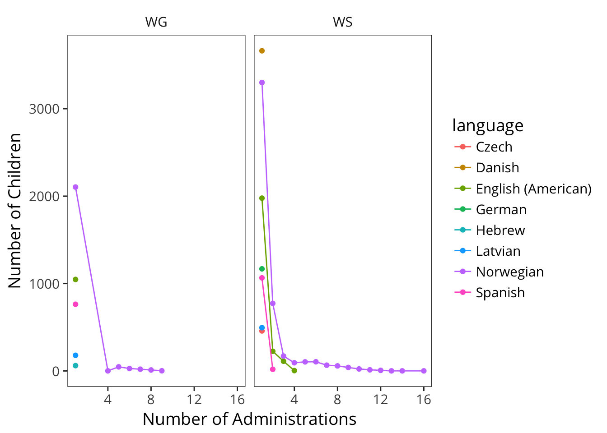

B Psychometric Properties of the CDI
In this Appendix, we examine the psychometric properties of the CDI through the lens of Item Response Theory (IRT). In brief, IRT provides a set of models for estimating the measurement properties of tests consisting of multiple items. These models assume that individuals vary on some latent trait, and that each item in a test measures this latent trait (see Baker 2001 for detailed introduction).
IRT models vary in their parameterization. In the simplest (Rasch) IRT model, each item has a difficulty parameter that controls likely a test-taker with a particular ability will be to get a correct answer. In the more sophisticated two-parameter model, each item also has a discrimination parameter that controls how much response probabilities vary with varying abilities. Good items will tend to have high discrimination parameters across a range of difficulties so as to identify test-takers at a range of abilities.
IRT models are a useful tool for constructing and evaluating CDI instruments, as they can help to identify items that perform poorly in estimating underlying ability. For example, WEBER et al. (2018) used IRT to identify poorly-performing items in a CDI instrument for Wolof (a language spoken in Senegal). IRT can also be used in the construction in computer-adaptive testing (Makransky et al. 2016).
This appendix examines IRT models as a window into the psychometric properties of the CDI. In the first section, we explore latent factor scores using the English WS data. In the second section, we examine individual items and find generally positive measurement properties, although with some items at ceiling (included via carry-over from the Words and Gestures form). In the third section, we look at differences between comprehension and production in the WG form. In the fourth section, we look at the properties of the instrument by word category in both WS and WG.
Overall, the conclusions of our analysis are that:
- Latent factor scores may have some advantages relative to raw scores in capturing individuals’ abilities, but for the purposes of the analyses we perform in the main body of the manuscript, they may carry some risks as well; hence we do not adopt them more generally.
- In general, CDI WS items tend to perform well, but from a pure psychometric perspective there are a number of items that could be removed from the English WS form.
- Comprehension items in general tend to have less discrimination than production, suggesting that they are not as clear indicators of children’s underlying abilities.
- Function words tend to have lower discrimination than other items but the lexical class differences are not huge and do not interact with whether they are measured using production vs. comprehension.
B.1 Preliminary Estimation
Practically, we use the mirt package (???,Chalmers and others (2016)) to estimate the parameters of a four-parameter IRT model. The four-parameter model supplements the standard two-parameter model with two parameters corresponding to floor and ceiling performance for a particular item. Items with high rates of guessing or universal acceptance across test takers would tend to have abnormal values on these bounds. Our goal in this first analysis is simply to examine parameter estimates across individuals and items.

We begin by estimating this model with data from 5492 from the English (American) WG dataset. We first examine the histograms of latent ability scores and compare them with chronological age (because sampling is non-uniform) and raw production scores. As can be seen above, latent ability shows a peak in the middle of the range and generally fewer cases distributed at floor and ceiling. This shift indicates first, that floor and ceiling effects in the form are partially rectified by the model, and second, that many children in the middle of the form’s range are not well-distinguished from one another.
One question regarding these scores is whether they should be used in place of proportion scores for some of the estimation problems we encounter throughout the rest of the book. These latent ability scores might be overall better reflections of children’s vocabulary than raw proportions in the best case. Nevertheless, we do not adopt them, for two reasons.

First, they do not perform better empirically. The analysis above shows gender differences (cf. Chapter @ref(#demographics)) by both measures. Surprisingly, there appear to be limited differences in the curves recovered by the analyses. For example, for raw production, the coefficient of variation across age in the gender differences is 0.6. For the latent ability estimates, the CV is 0.64. Thus, based on the assumption that gender differences are constant across age, there is no evidence for better measurement. Of course, this assumption may be wrong, but this analysis does not yield evidence in favor of adoption. (Perhaps a smaller sample might yield different results; it could be that raw scores are stable due to the large amount of data in this analysis).
Second, there are other negatives associated with swapping an imperfect but straightforward measure (raw scores) to a model-derived measure (latent ability). Interpretation clearly suffers if we use the model-derived measure, since readers will not be able to map scores back to actual behavior in terms of the checklist. In addition, model estimation issues across instruments introduce further difficulties in interpretation. Most obviously model estimates with smaller datasets may vary in unpredictable ways; similarly, the presence of poorly-performing items (see below) in certain datasets may lead to systematic issues in the latent estimates for those datasets.
B.2 Item effects in WS

Our next analysis examines items in the same WS dataset. The plot above shows item discrimination and difficulty, with outlying items labeled. Visual inspection shows a long tail of items with limited discrimination and low difficulty (e.g., mommy, ball, bye, etc.). These are clearly those items that are produced by nearly all of the children in the sample – they do not discriminate because they are passed by all children in the sample. If the only goal of the instrument were discrimination of different ability levels, they could likely be removed. On the lower right hand side of the plot, the remainder of items are clumped, with discrimination above zero and somewhat higher difficulty. The right-hand tip of this triangle shows the most diagnostic words (e.g., run, kitchen, and table), all of which effectively distinguish between the upper and lower groups of children in the sample. Finally, at the bottom of this triangle is a large cluster of words that are quite difficult. Some of these do not show good discrimination (e.g., country), since it is likely too difficult for nearly all children in the sample.

We can follow up on the question of word inclusion by examining the distribution of discrimination parameters alone. Overall, this plot suggests that there are some items that could be dropped without major penalty. In particular, along with the very easy words in the left tail, there is a large cluster of words that are perhaps too difficult to be useful for most children.

As a separate check on this analysis, we can examine the upper and lower bounds estimated for particular words. These bounds show words that are known by only a small number of children at ceiling or have a very high floor (respectively). Examining those with a very low ceiling, we see items that are likely to be quite idiosyncratic, for a variety of reasons. For example, babysitter, camping, and basement likely vary by children’s home experiences (further mediated by access to resources, parenting practices, and circumstances). In contrast, genital items (e.g. vagina*) vary by gender (see Chapter 8). Examining those items with a very high base rate shows a similar set to those with very low discrimination patterns, suggesting that the four-parameter model may have fit these words as having a high chance level with essentially no discrimination ability.

Finally, we see items like grrr, woof woof, moo, and yum yum. These items show limited development across the age range of the instrument. Although most parents report children saying yum yum early, it is likely that some families either do not say yum yum or do not report it on the form as a signal of gustatory pleasure (perhaps because their 30-month-old already says delicious).
B.3 Production and comprehension

We next use IRT to estimate whether there are differences between production and comprehension, using WG data. The plot above shows IRT parameter values for discrimination and difficulty for production and comprehension (a few extreme parameter values are truncated in the plot for ease of seeing general trends). There are clear distribution differences on both measures. Difficulty is much higher (negative values) for production relative to comprehension, reflecting the expected asymmetry.
We also see clear evidence that in general comprehension items show less discrimination, consistent with the hypothesis that production behavior is a clearer signal of children’s underlying knowledge than assumed comprehension. This pattern is visible in two ways. First, discrimination values are negative for more items in comprehension, indicating items that are not measuring ability. Second, and more importantly, mean discrimination is substantially lower for comprehension relative to production (1.1 vs. 1.8). Very few comprehension items have discrimination is greater than 2.
This pattern of findings – lower discrimination values for comprehension – could be due to at least two possibilities. One is that parents are better reporters of production than comprehension, and hence these items are more discriminative of true behavior. The source of error in this case would be parents’ mistaken belief that their child understands a word. The second is that comprehension is a fundamentally more variable construct and that, hence, individual word knowledge consistent with understanding could be due to partial knowledge. Here the source of error is variance in how well children know the meanings of words. We cannot distinguish between these two models, but they have very different underlying implications for the CDI. On the first model, comprehension is simply hard to measure with parent report. On the second, comprehension is perhaps a richer and more nuanced behavior than production.
B.4 Properties by lexical category
One hypothesis that we have often speculated about is the question of whether there are special psychometric issues with particular word classes. For example, do parents struggle especially to identify whether children produce or understand function words?

The plot above reproduces the WG by-item analyses above but with color given by lexical class. Many of the easy, non-discriminating items are found in the “other” section. In contrast, the hardest items tend to be function words. These items tend to have lower discrimination on average (1.3) compared with nouns (1.8), adjectives (1.9), and especially verbs (2.1). Nevertheless, the situation is not dire: most have a discrimination parameter above one. Thus, although function words are not the most discriminative items on the CDI WS, these items still appear to encode valid signal about children’s abilities.

In our last analysis, we turn to the WG data. The plot above shows the mean and standard deviation for discrimination parameter values. In production, the higher discrimination shown on the whole (above) is likely due to the strong performance of nouns. In contrast, mean discrimination for other words is low. This pattern may be due to the overall sparsity of early production data for non-noun items. In comprehension, in contrast, there is a moderate level of discrimination for all classes except “other” (which includes items like mommy and daddy and a variety of animal sounds and social routines). One hypothesis about this finding is that, especially early on, parents are very generous in their interpretation of whether their child understands these words.
In sum, we do not find evidence that function words are particularly bad. Rather, there are some low-performing items spread across all categories of the CDI form, and many of these likely perform poorly for the reasons described above – especially difficulty in interpretation of very early behavior and variability in home experience.